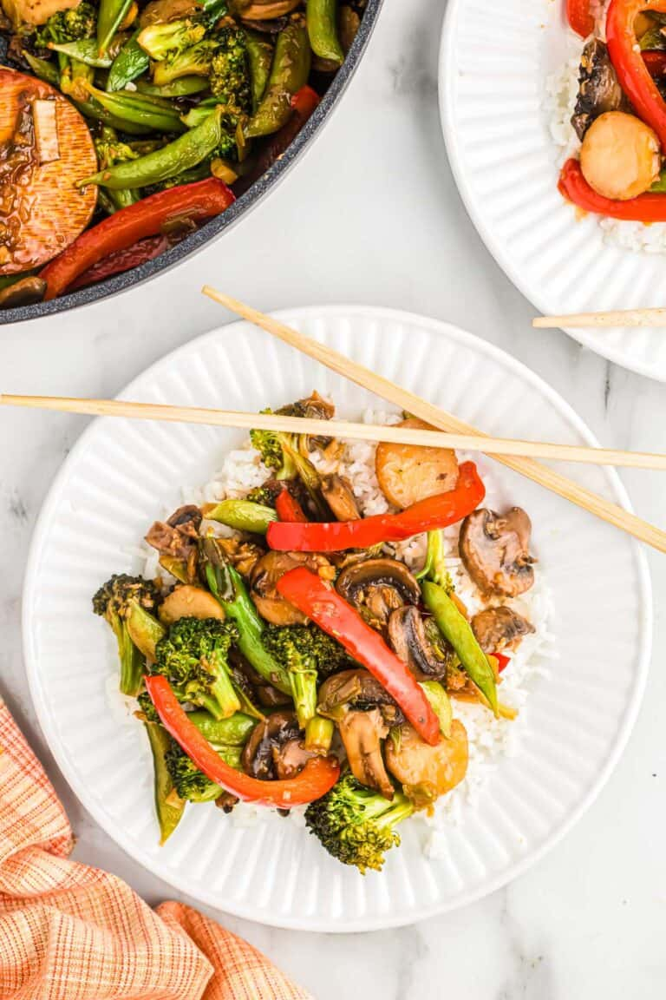

Vegetable Stir Fry

This is a simple but flavorful dish the whole family will love. That's right, even those kids who scoff at leafy greens will come around when they give it a taste. This dish features a multitude of vegetables, stirfried then soaked in a slightly sweetened soy sauce mixture.
Ingredients
Stir Fry
- 1 large carrot, sliced
- 2 cups medium brocoli florets
- 8 oz can baby corn spears, drained
- 1 whole bell pepper (red, yellow, organge), sliced or quarted
- 2 Tbsp cooking oil, extra light olive oil or canola
- 2 Tbsp unsalted butter
- 3 garlic cloves, peeled and minced
- 1/4 tsp ground ginger
Sauce
- 1/4 cup chicken broth
- 1/2 tsp cornstarch
- 3 Tbsp low sodium soy sauce
- 2 Tbsp honey
- 1/4 tsp hot sauce, optional (Sriacha works great)
Directions
-
In a large non-stick skillet or wok, over medium heat, heat the oil to smoking. Add the vegetable and stir fry for about 3 minutes or until vegetables are crisp-tender. Add the butter, garlic, ginger, and cook until fragrant.
-
In a small bowl, combine all the ingredients for the stir fry sauce. Pour the sauce over the vegetables and stir.
-
Turn heat down to medium/low and cook 3-4 minutes, until sauce thickens and vegetables are desired tenderness.